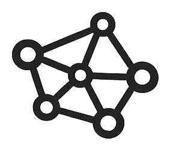
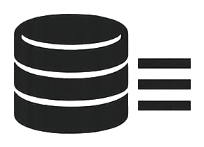

CHABAD TRACKER
▓▓▒░░░░░░░░░
initializing sql.js
CHABAD TRACKER
/
ABOUT


data as of
—
·
—
incidents
·
cycle
—
↻ new data — reload
data is more than 24 hours old
✕
OPEN IN DATABASE
People Web · curated constellations
density-scored sub-graphs · named perps clustered by family + co-defendant ties
show full web →
loading…
✕
▤ FILTERS
Browse
Stats
←
HOME · INVESTIGATION CONSOLE
✕